Art Director and Motion Designer with over six years of experience across advertising, creative concepts, and visual storytelling.
Curious by nature, hands-on by choice. I enjoy taking ideas from concept to execution, exploring new technologies, and finding creative solutions to challenging briefs.
Greek, based in Oslo. Largely self-taught, always learning.
Experience
Oct 2025 – Apr 2026
Art Director4 Wise Monkeys, Athens
Developed creative concepts and visual directions for digital, social, and integrated campaigns, contributing from initial ideation through design and execution.Clients included Chupa Chups, Mentos, Jack Daniel's, Corona, Novibet, and Papadopoulou.
May 2024 – Oct 2025
Junior Art Director4 Wise Monkeys, Athens
Nov 2023 – May 2024
DesignerAdvengers, Athens
Visual design and motion for campaigns, digital content, and social media.Clients included Papadopoulou, Audi, Bentley, Praktiker, Endless, and Coffeeway.
Feb 2022 – Nov 2023
Motion DesignerSleed, Athens
Motion design, animation, visual effects, 3D modelling, and storyboarding for digital campaigns and social content.
Dec 2020 – Feb 2022
Junior Motion DesignerSleed, Athens
Selected clients
- Novibet
- Papadopoulou
- Corona
- Mentos
- Chupa Chups
- DUO
- Everest
- Jack Daniel's
- Bioten
- Frezyderm
- AstraZeneca
- MSD
- Audi
- Bentley
- Praktiker
- Endless
- Coffeeway
Recognition
- Gold — Social Media Awards 2025DUO — Best Real-Time Response / Occasion-Based Marketing
- Cannes Young Lions2024 & 2025 participant
Education
- Kristiania University of Applied SciencesBachelor's in Computer Arts (in progress)2026–2029
- LIONS Nano MBA42Courses
Certifications
- Creative ThinkingCannes Lions, 2024
- Norwegian — B1Folkeuniversitetet, 2026
Working on something? ismini.papa.1998@gmail.com
Okay.
The unfiltered version.
Six years in advertising, a Nintendo DSi, a few questionable decisions, and a tattoo that somehow ties it all together.
There's a story here.
Some things never change.
2010.
12-year-old me trying to be creative on a Nintendo DSi.
No clue that this would eventually become my job.
But here we are.
Sound on. It's 2010, after all.
Things you don't see in the portfolio.
Go ahead, move things around. My desk was never this organised anyway.Go ahead, swipe through. My desk was never this organised anyway.
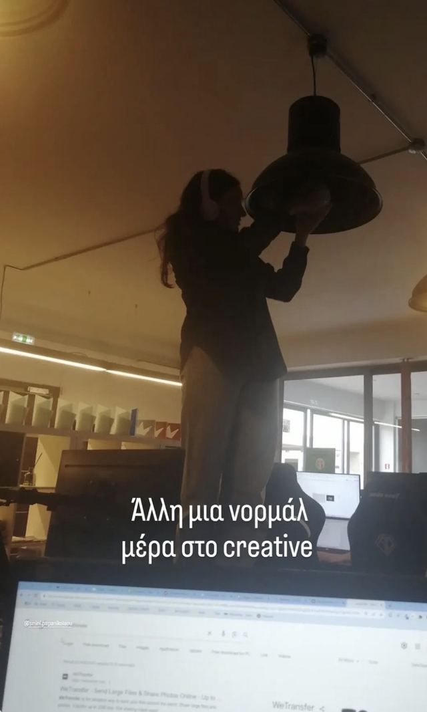
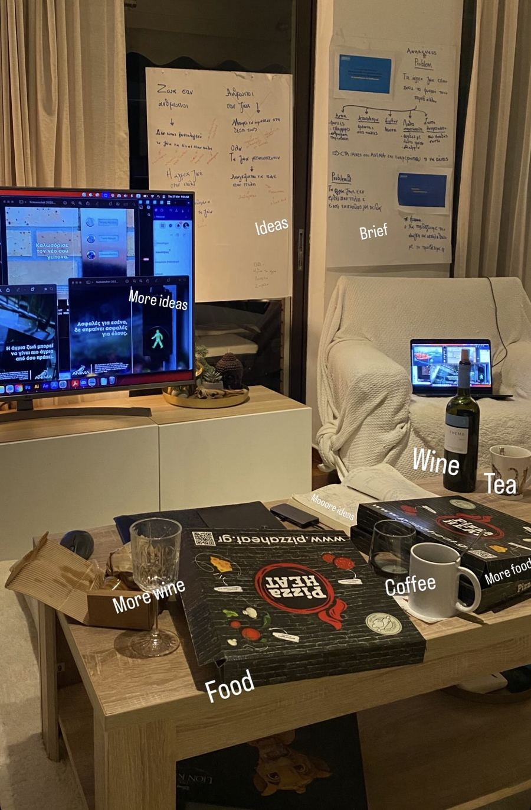
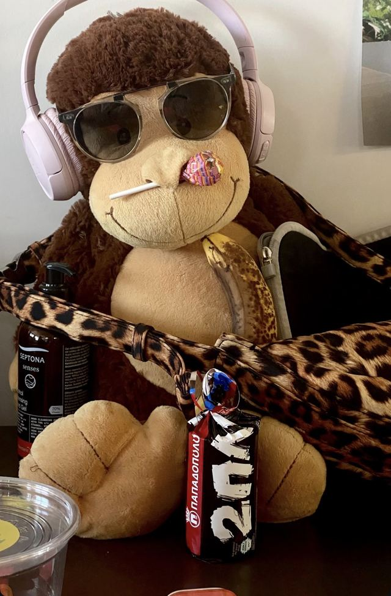
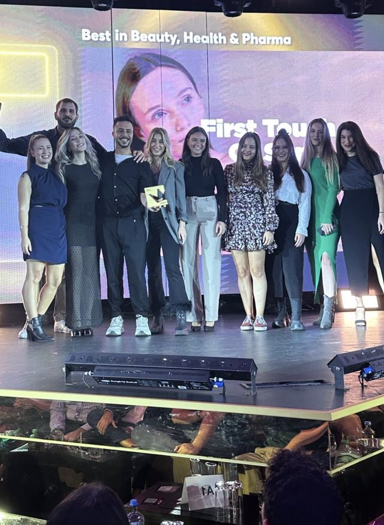
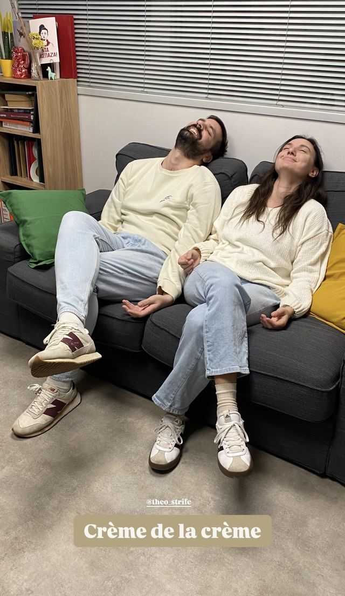
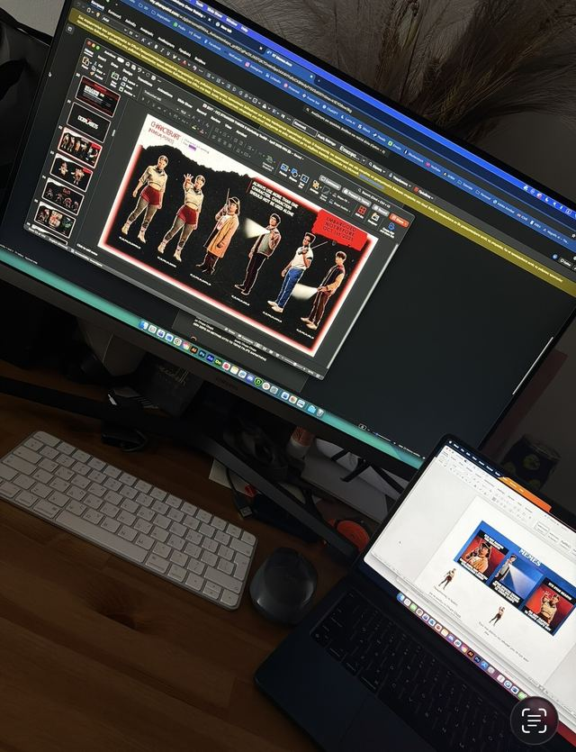
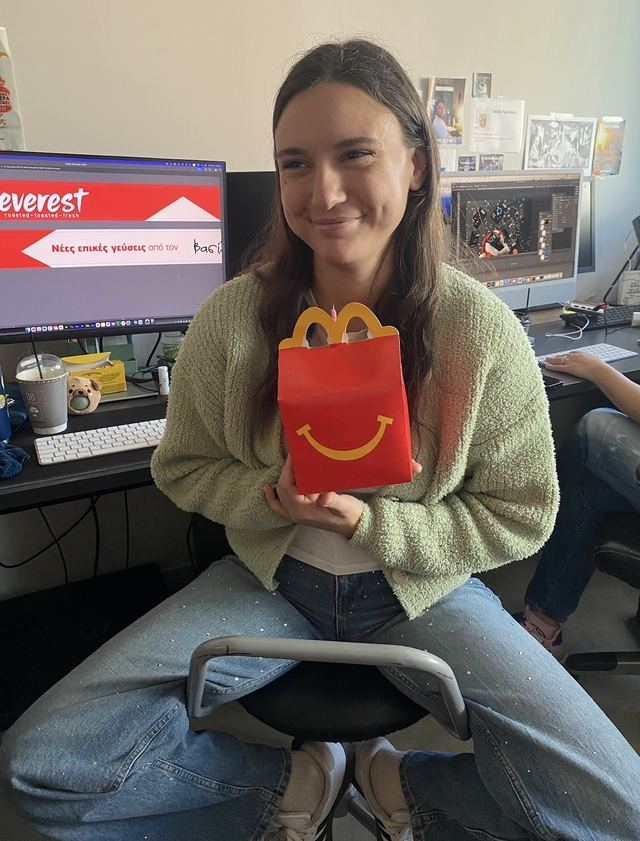
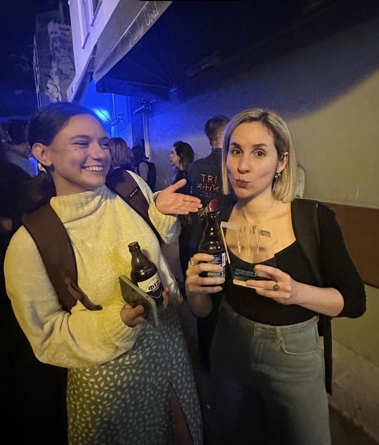
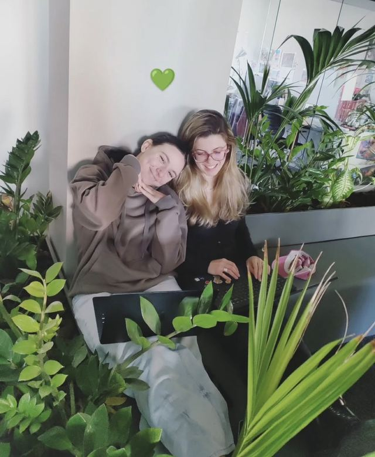
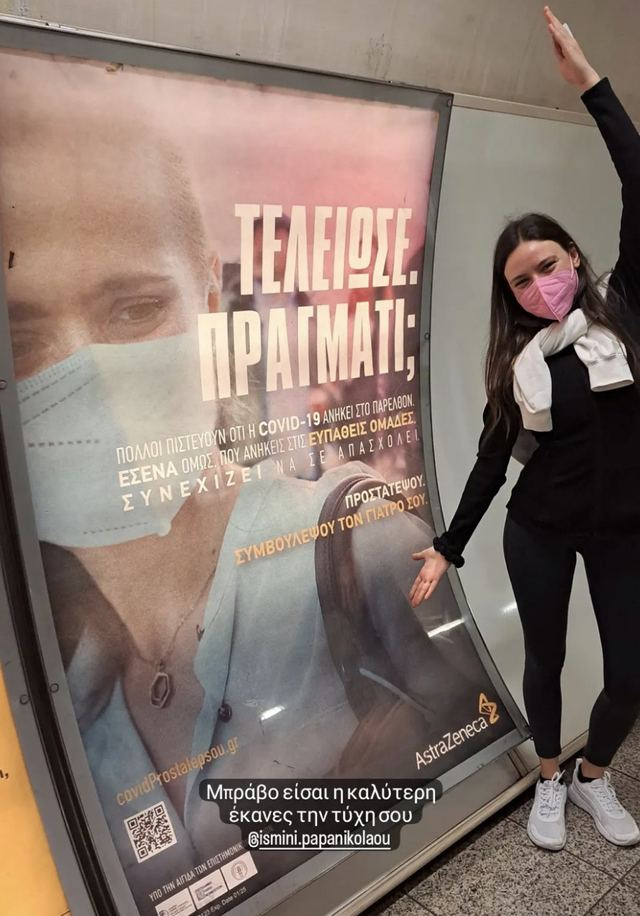
About that switch...
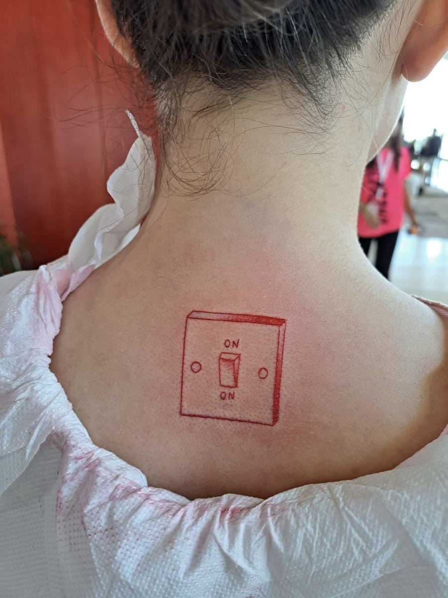
Fun fact: the switch is real.
It's actually tattooed on my back.
And if you look closely, it doesn't say ON / OFF.
ON / ON
So yes, there are two versions of this website. But mostly, I'm just me. All the time.